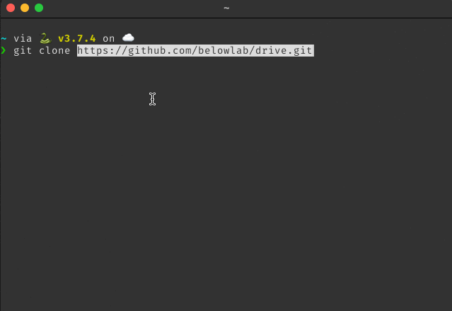
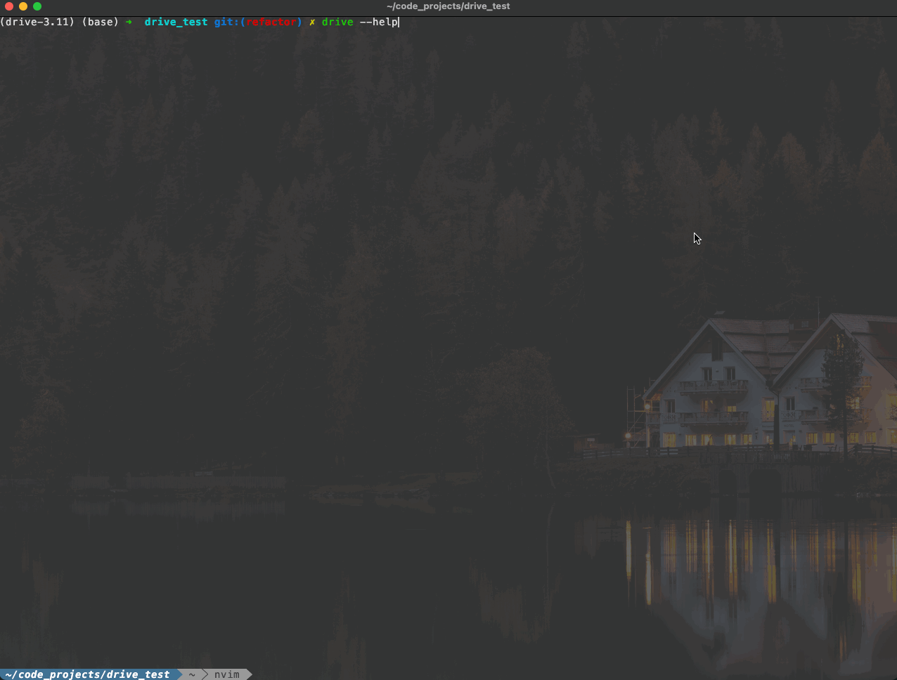

Installing DRIVE from Github#
This installation method assumes that you are familiar with Git and Github, the commandline, and python’s Anaconda package manager and that these programs are installed/can be install on whatever computing environment you are using. You will have to use all of these tools so you will need to be familiar enough with each one to run the example commands. If you wish to read the documentation for each of these then they will be listed below:
Git: Git Website
Github: Github Website
Commandline Interface: This is probably overkill but here is a very indepth CLI tutorial
Anaconda Anaconda Website
Optional Tip
You can also use PDM to install the program. PDM is a python package manager (another alternative to Pip and Conda and all the other package manages) that has good dependency resolution to create a reproducible environment. You can read more about the project here and the steps to install here [PDM Installation](https://pdm-project.org/en/latest/). For individuals wishing to contribute to DRIVE development, PDM is the current recommended way to install DRIVE. PDM allows for individuals to install the necessary development dependencies to properly format and commit the code so that they can contribute to the repository.
Steps to installing DRIVE:#
Step 1: Clone the Github repository:#
You can clone the Github repository into your local environment using the command shown below:
git clone https://github.com/belowlab/drive.git
You should now have a directory called drive. You can check if this exists using the command:
ls drive/
The process should look similar to the screencasts below:
{kind=link}
If you see a directory file tree then the program cloned correctly. If you receive an error saying that the directory does not exist, then you will have to debug the error to move onto step 2.
Step 2: Installing necessary dependencies:#
if not using PDM or are not interested in developing the project:
If you are not using PDM than you can directly clone the conda environment.yml file using the following command:
conda env create -f DRIVE_envi.yml
Make sure that you are in the drive directory. This command will create a virtual environment called DRIVE using python 3.9 or newer with all the required dependencies.
If using PDM:
PDM can install specific python versions (documentation) and create virtual environments using a number of backends
Warning
DRIVE has only been tested with python >= 3.9 and python <= 3.12. Other version of python may not work. For this reason it is currently recommended to specify the python version within this range.
Once you have created and activated the environment, you can install the necessary dependencies using the following command:
pdm install --without dev,docs
or
pdm install --prod
{kind=link}
This command will install all of the runtime dependencies and not the developer dependencies. If you are developing the tool then you can use the command
pdm install --with dev
If successful you will have all the dependencies you need to run the program. You can check this by running the command:
python drive/drive.py -h
you should see the DRIVE cli as shown below:
{kind=link}
Note
If you also want to work on the Documentation then you need to install the docs group with PDM.